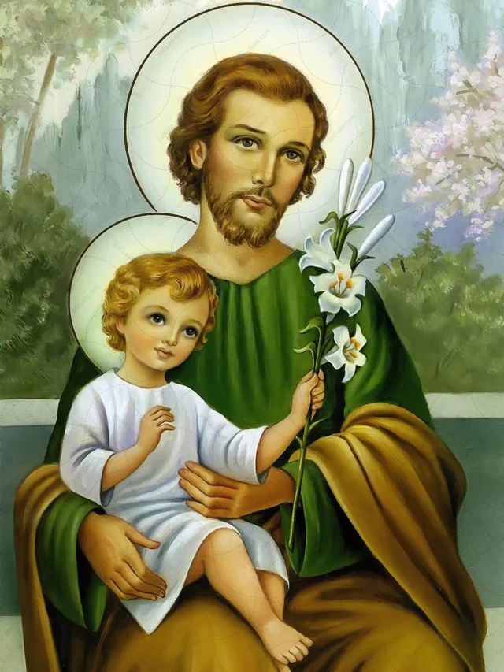

“São José, homem corajoso, ensina-me a ser como tu, faz-me generoso!”
São José foi o esposo de Maria e o pai adotivo de Jesus. Ele era um carpinteiro simples que vivia em Nazaré e descendia da linhagem do Rei Davi. Ao descobrir a gravidez de Maria, foi avisado por um anjo em sonho de que o bebê era o Filho de Deus e aceitou a missão de protegê-los. Ele foi o responsável por guiar a família no nascimento de Jesus em Belém, por protegê-los na fuga para o Egito e por ensinar seu ofício a Jesus. José é conhecido como o "Santo do Silêncio", pois não há nenhuma fala dele registrada na Bíblia. Ele teria morrido antes do início da vida pública de Jesus, cercado por Ele e por Maria, e hoje é considerado o padroeiro dos trabalhadores e da Igreja Universal.
São José foi o esposo da Virgem Maria e o pai adotivo de Jesus, sendo venerado como o padroeiro universal da Igreja Católica, das famílias e dos trabalhadores.